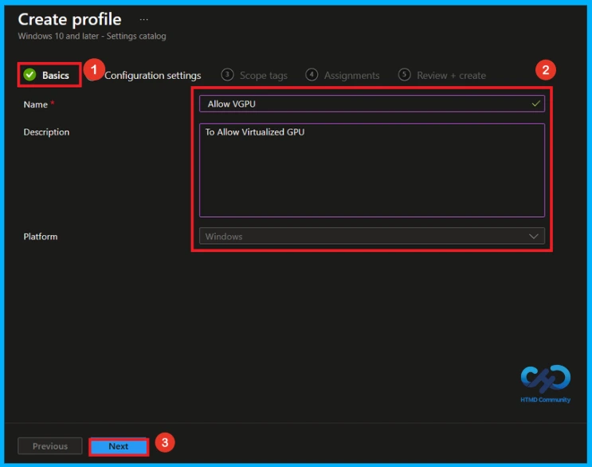
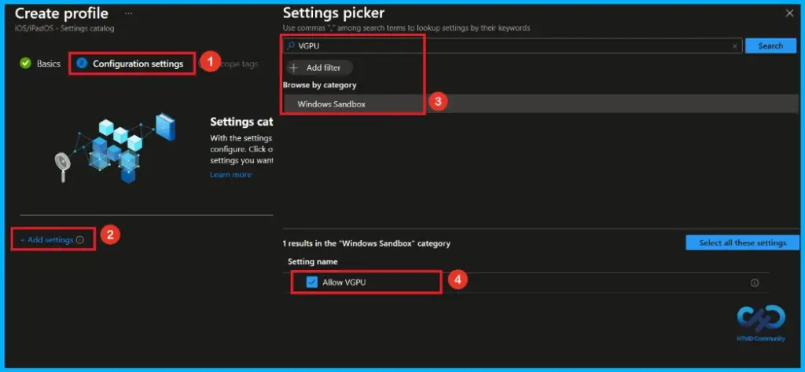
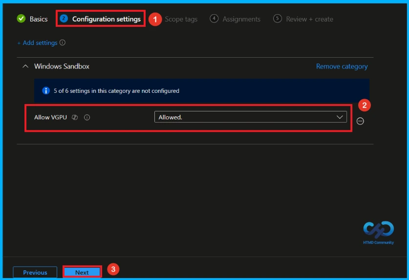
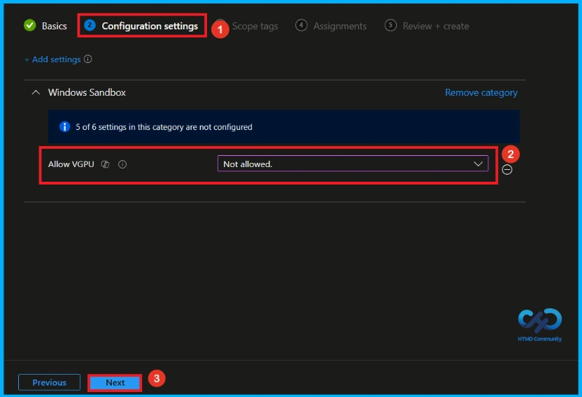
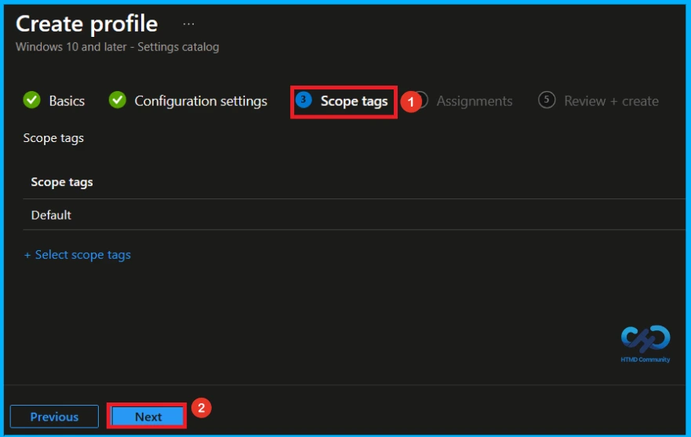
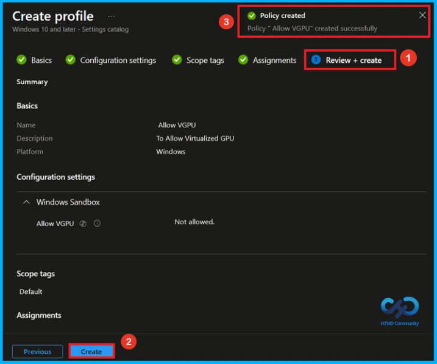
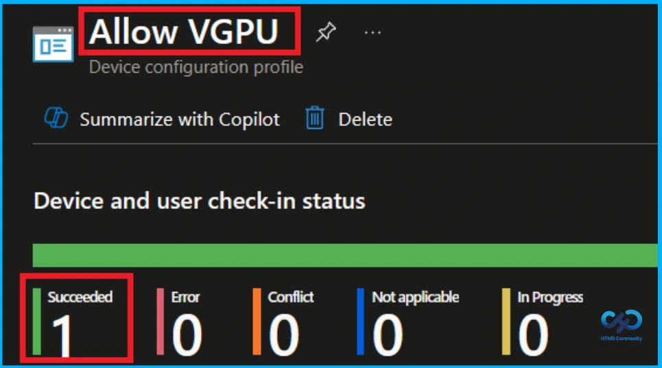
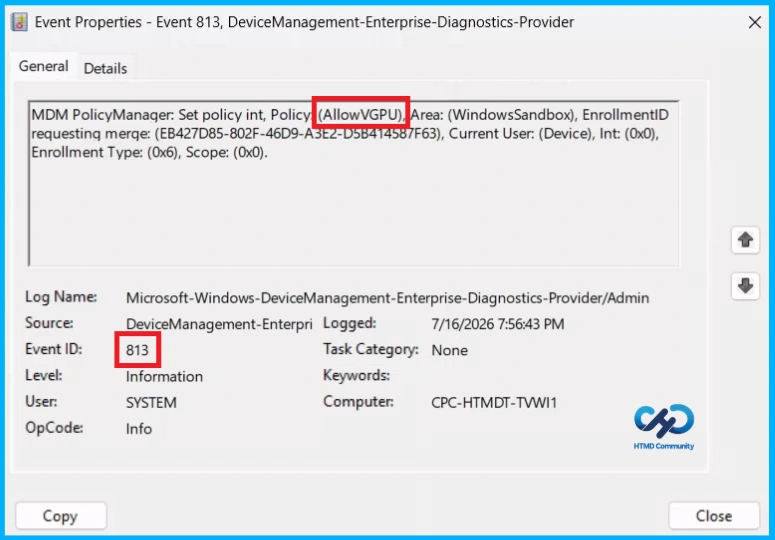
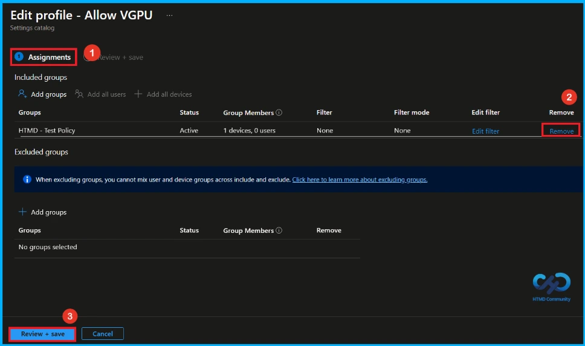
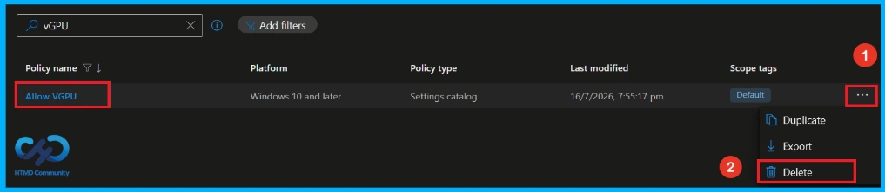

Key Takeaways
- This policy controls whether Windows Sandbox uses a virtualized GPU or software rendering.
- Enabling this policy allows Windows Sandbox to use the virtualized GPU.
- Disabling this policy makes Windows Sandbox use software rendering, which is slower.
- Keeping vGPU enabled provides better graphics performance.
Hey, let’s discuss about how to Configure Windows Sandbox vGPU Policy using Intune for Better Graphics Performance or Reduced Attack Surface. This policy setting controls whether Windows Sandbox uses a virtualized GPU (vGPU) or software rendering. If you enable this setting, Windows Sandbox can use the computer’s GPU, which provides faster and smoother graphics performance.
Table of Contents
Configure Windows Sandbox vGPU Policy using Intune for Better Graphics Performance or Reduced Attack Surface
If you disable this setting, Windows Sandbox will use software rendering instead of the GPU. This uses the CPU to process graphics, which can be slower. If you do not configure this setting, vGPU is enabled by default, so Windows Sandbox will use hardware acceleration automatically.
How to Create a Policy
To create a new policy, first sign in to the Microsoft Intune admin center. After you sign in, go to the left menu and click Devices. Next, select Configuration, click Create, and then choose New policy to start creating the policy.

Create a Profile
On this page, select the Platform and Profile type before creating the policy. This is a required step, and you must complete it to continue. Choose Windows 10 and later as the platform and Settings Catalog as the profile type, then click Create.

Basic Tab of VGPU Policy
The Basic tab allows you to provide details about the policy you are creating. Enter the policy Name as Allow vGPU and add a description such as To Allow Virtualized GPU. The Name field is required, while the Description field is optional. After entering the details, click the Next button to continue.

Configure VGPU Policy
From the Configuration tab, click the + Add settings link to find and select the required settings. After clicking this link, the Settings Picker window will open. In this window, select the Windows Sandbox category or search VGPU on search bar and choose the Allow vGPU setting to configure the policy.

Allow VGPU
After closing the Settings Picker, you can see the Allow vGPU(Virtualized GPU) setting on the Configuration settings page. By default, the Allow vGPU setting is set to Allowed. Keep the default setting and click Next to continue.

Not Allowed VGPU
To disable the Allow vGPU policy, change the setting from Allowed to Not allowed using the drop-down menu. After selecting Not allowed, the vGPU feature will be disabled. Click the Next button to continue with the configuration.

What is Scope Tag
A scope tag in Intune is used to control visibility and access to Intune resources based on administrative roles. Scope tags are not mandatory. You can add the scope tag using the select scope tags button. Click Next to continue.

Assignment Tab of VGPU Policy
To assign the policy to specific groups, you can use the Assignment Tab. Here I click, +Add groups option under Included groups. I choose a group(HTMD _Test Policy) from the list of groups and click on the Select button. Again, I click on the Select button to continue.

Final Step of VGPU Policy Creation
In the Review + create step, review all the selected settings to make sure there are no errors or incorrect configurations. If any changes are needed, click Previous to go back and update the settings. After confirming all details are correct, click Create to finish creating the Allow vGPU policy. A notification will appear confirming that the policy was created successfully.

Review and Deploy the Policy
The Monitoring Status page shows whether the policy has succeeded or not. To quickly configure the policy and take advantage of the policy sync the assigned device on Company Portal. Open the Intune Portal. Go to Devices > Configuration > Search for the Policy. Here, the policy shows as successful.

Client Side Verification
Event Viewer helps you check the client side and verify the policy status. Open the Client device and open the Event Viewer. Go to Start > Event Viewer. Navigate to Logs: In the left pane, go to Application and Services Logs > Microsoft > Windows > DeviceManagement-Enterprise-Diagnostics-Provider. Event ID 813.
MDM PolicyManager: Set policy int, Policy(AllowVGPU), Area: (WindowsSandbox), EnrollmentID
requesting merge: (EB427D85-802F-46D9-A3E2-D5B414587F63), Current User: (Device), Int: (0x0),
Enrollment Type: (0x6), Scope: (0x0).

How to Remove Assigned Group from VGPU
If you want to remove the Assigned group from the policy, it is possible from the Intune Portal. To do this, open then Allow VGPU Policy on Intune Portal and click the edit option on the Assignments tab and the Remove Policy.
To get more detailed information, you can refer to our previous post – Learn How to Delete or Remove App Assignment from Intune using by Step-by-Step Guide.

How to Delete Allow VGPU Policy from Intune
You can easily delete the Policy from the Intune Portal. From the Configuration section, select the policy(Allow VGPU) and click the 3 dots. Here, you can delete the policy and It will completely remove it from the client devices.
For detailed information, you can refer to our previous post – Learn How to Delete or Remove App Assignment from Intune using by Step-by-Step Guide.

Need Further Assistance or Have Technical Questions?
Join the LinkedIn Page and Telegram group to get the latest step-by-step guides and news updates. Join our Meetup Page to participate in User group meetings. Also, Join the WhatsApp Community and WhatsApp Channel to get the latest news on Microsoft Technologies. We are there on Reddit as well.
Author
Anoop C Nair has been Microsoft MVP from 2015 onwards for 10 consecutive years! He is a Workplace Solution Architect with more than 22+ years of experience in Workplace technologies. He is also a Blogger, Speaker, and Local User Group Community leader. His primary focus is on Device Management technologies like SCCM and Intune. He writes about technologies like Intune, SCCM, Windows, Cloud PC, Windows, Entra, Microsoft Security, Career, etc.